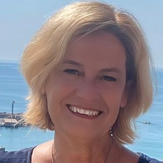
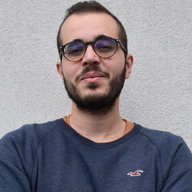
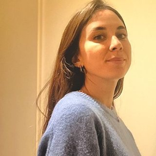

La Fondazione Don Carlo Gnocchi è una fondazione italiana senza scopo di lucro che da oltre 70 anni si prende cura di persone con disabilità, persone anziane e pazienti che necessitano di riabilitazione, attraverso una rete di centri in nove regioni italiane. Il suo centro di Firenze è riconosciuto dal Ministero della Salute come Istituto di Ricovero e Cura a Carattere Scientifico (IRCCS) per la riabilitazione e ospita laboratori di ricerca, tra cui PROMISE@LAB e l'Unità di Riabilitazione Neuromotoria Complessa, gestita insieme all'Università degli Studi di Firenze.
Ruolo in INTEGRA
FDG coordina il progetto e ne guida la gestione (WP1). Ha sviluppato e certificato la piattaforma di teleriabilitazione MAIA, utilizzata nelle sperimentazioni pilota in Italia, Spagna e Romania. È responsabile della definizione dei requisiti di sistema, del protocollo dello studio pilota e dell'approvazione etica, nonché del quadro per la valutazione d'impatto, e gestisce il centro pilota italiano in area urbana.
Team

Francesca Cecchi Responsabile scientifica e coordinatrice del progetto
Michele Piazzini Project manager Maria Luigia del Vicario
Maria Luigia del Vicario Giulio Cherubini
Giulio Cherubini
Virginia Ambrogi Marco Baccini
Marco Baccini